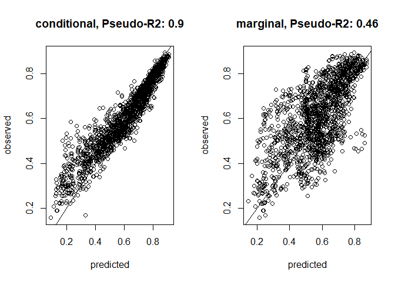
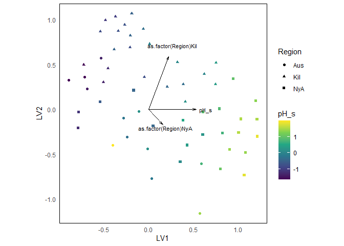
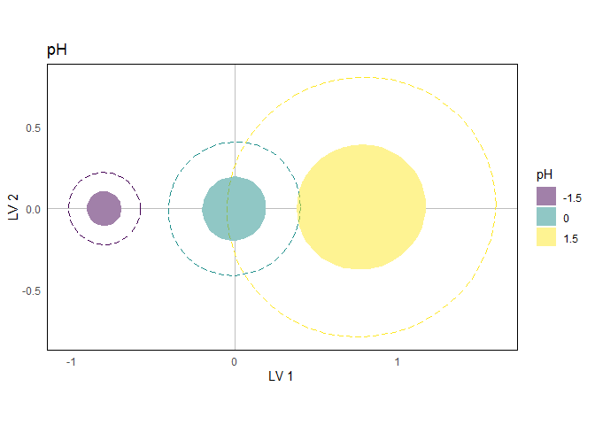

rrGDM fits Reduced Rank Generalised Dissimilarity Models (RRGDM): an extension of Generalised Dissimilarity Modelling (GDM) that positions samples in a low-dimensional latent space, rather than regressing pairwise dissimilarities directly against pairwise environmental distances. This means that RRGDM can provide, in one model:
an ordination of samples and predictor loadings in a latent space, representing composition state (like PCoA/RDA)
estimates of which environmental predictors drive compositional turnover (like GDM), including support for categorical predictors and random effects (e.g.,
... + (1 | group))a way to separately model effects on average composition versus compositional dispersion, here estimated jointly in the same latent space (see below).
Installation
You can install the development version of rrGDM from GitHub with:
# install.packages("devtools")
devtools::install_github("dhercar/rrGDM")The model
RRGDM places each sample at a point in a -dimensional latent space, and models the expected pairwise dissimilarity between two samples as a link-transformed Euclidean distance between their positions:
RRGDM writes the position along each latent dimension as a linear predictor, exactly like a standard regression:
contains predictor values for sample , passed through formula. Like in other modelling packages, factors are dummy-coded, and terms passed with the syntax (1|group) are treated as random effects. is the loading describing how strongly, and in which direction, each predictor influences position of samples along dimension . is a sample-level random effect capturing whatever structured variability (i.e., variability constrained in the k latent variables) isn’t explained by predictors.
The spread of samples (dispersion) is controlled by the parameter , which can in turn be modelled as a function of external predictors via formula_sd:
So formula controls where samples are expected to sit in ordination space, and formula_sd controls how tightly they are expected to cluster around that position, both estimated simultaneously.
Models are fit by maximum likelihood via TMB, using the Laplace approximation to integrate out random effects.
Example
library(rrGDM)
library(ggplot2)
## plotting preferences
theme_set(theme_minimal())
theme_update(text = element_text(size = 11),
panel.border = element_rect(fill = 'transparent'),
panel.grid = element_blank())
set.seed(2)We will use the microbialdata dataset bundled with gllvm: an OTU (species) table of soil bacterial communities, together with environmental covariates recorded at each sampling site.
# Community matrix (sites x OTUs) and environmental predictors
com <- gllvm::microbialdata$Y
env <- gllvm::microbialdata$Xenv
env$pH_s <- scale(env$pH)Fitting a RRGDM
We fit a model with a continuous predictor (pH_s), a categorical predictor (Region), and a random intercept for Site, all entering the latent composition via formula. We also let dispersion depend on pH via formula_sd, to test whether communities become more or less variable with pH.
m1 <- rrGDM(Y = com,
X = env,
k = 2, # 2 latent dimensions
formula = ~ pH_s + as.factor(Region) + (1|Site),
formula_sd = ~ pH_s,
family = 'beta.binomial',
link = 'negexp',
dist_method = 'bray')-
kis the number of latent dimensions. 2-4 is often enough. -
dist_methodis the dissimilarity index computed fromY(any method supported byvegan::vegdist()). -
family/linktogether determine how the raw dissimilarity (e.g. Bray-Curtis, itself a ratio of counts) relates to latent distance. A beta-binomial family treats the dissimilarity’s numerator/denominator as successes/trials, which respects the fact that dissimilarities like this are ratios of discrete counts, not continuous values. The negative exponential link makes equal steps in latent distance correspond to equal proportional loss of shared species (ToDo: Ref paper).
Testing the effects of the predictors
anova() gives Wald tests for each predictor of the fitted model. Each row tests all the parameters of a variable at once (Df is the number of parameters tested), which is useful for factors with several levels or for variables that appear in both formula and formula_sd.
By default, the location (formula) and dispersion (formula_sd) effects of the same variable are tested jointly. This answers the question does this variable matter at all?
anova(m1)
#>
#> ── Wald tests by variable ──
#>
#> • Interaction terms included in each variable's test
#> • Location and dispersion effects of the same variable tested jointly
#>
#> variable effect Df Wald Pr_Chisq
#> pH_s location + dispersion 2 138.461 <1e-06 ***
#> Region location 4 17.937 0.001 **
#>
#> Terms grouped in each test:
#> Region (location): as.factor(Region)
#>
#> ---
#> Signif. codes: 0 '***' 0.001 '**' 0.01 '*' 0.05 '.' 0.1 ' ' 1
#> Tests on location effects can be anti-conservative with few samples.With separate = TRUE, location and dispersion effects are tested in separate rows. This answers two different questions: does the variable shift community composition? (location) and does it change how variable communities are around that position? (dispersion).
anova(m1, separate = TRUE)
#> ── Wald tests by variable ──
#>
#> • Interaction terms included in each variable's test
#> • Location and dispersion effects tested separately
#>
#> variable effect Df Wald Pr_Chisq
#> pH_s location 1 113.762 <1e-06 ***
#> pH_s dispersion 1 30.520 <1e-06 ***
#> Region location 4 17.937 0.001 **
#>
#> Terms grouped in each test:
#> Region (location): as.factor(Region)
#>
#> ---
#> Signif. codes: 0 '***' 0.001 '**' 0.01 '*' 0.05 '.' 0.1 ' ' 1
#> Tests on location effects can be anti-conservative with few samples.Wald tests on loadings can be anti-conservative with few samples, so treat p-values close to the threshold with caution. wald_test() gives the tests for each individual coefficient, and summary() the full model summary.
Checking model fit
predict() can return either conditional predictions (using each sample’s own fitted latent position) or marginal predictions (using only fixed effects and ignoring random effects, including sample-level deviation). Comparing both against observed dissimilarities is a useful diagnostic:
Conditional fit shows how well latent community composition (as represented by the k latent dimensions) represents the true variability in community composition. If the fit is poor, any inference should be done with caution.
The gap between conditional and marginal fit shows how much of the variability in community composition is attributable to measured predictors versus unexplained sample-to-sample variability.
par(mfrow = c(1, 2))
pred_Y <- predict(m1, conditional = TRUE)[, 3]
R2_cor <- round(cor(pred_Y, m1$Y_diss / m1$Y_den)^2,2)
plot(pred_Y, m1$Y_diss / m1$Y_den,
ylab = 'observed', xlab = 'predicted',
main = paste0('conditional, Pseudo-R2: ', R2_cor))
abline(0, 1)
# median of the simulated marginal dissimilarities (column "50%")
pred_Y <- predict(m1, conditional = FALSE)[, 4]
R2_cor <- round(cor(pred_Y, m1$Y_diss / m1$Y_den)^2,2)
plot(pred_Y, m1$Y_diss / m1$Y_den,
ylab = 'observed', xlab = 'predicted',
main = paste0('marginal, Pseudo-R2: ', R2_cor))
abline(0, 1)
Ordination (biplot)
Environmental loadings and sample positions can be represented in the same latent space, so it is possible to obtain a standard ordination plot with environmental arrows overlaid:
biplot(m1, rotate = FALSE,
col_by = 'pH_s',
shape_by = 'Region') +
scale_colour_viridis_c()
As with any ordination, it is worth checking how much the reduced -dimensional space distorts the original dissimilarities. The conditional fit above already gives us an idea, but stress() provides another, commonly used diagnostic. It returns a Kruskal-style stress statistic (similar to vegan::metaMDS and MASS::isoMDS) comparing fitted latent distances against the observed dissimilarities:
Visualising partial effects in ordination space
Because location and dispersion are both modelled directly in latent space, we can visualise the partial effect of predictors as an ordination. For example, we represent latent coordinates for three representative pH values, specifying:
-
sim_site = TRUE: so site-level random variability is included via simulation from -
sample_param = FALSE: parameter uncertainty is not included
# Creating new data
X_pred <- expand.grid(
Region = as.factor(unique(gllvm::microbialdata$Xenv$Region)[1]),
Site = as.factor('Aus'),
pH_s = c(-1.5, 0, 1.5))
# Generating predictions
pred_ord_2 <- predict(m1,
newdata = X_pred,
ordination = TRUE,
boot = TRUE,
sample_param = FALSE,
sim_site = TRUE,
n_sim = 1000)
# Plotting predicted coordinates
ggplot(pred_ord_2, aes(x = L.1, y = L.2)) +
geom_hline(yintercept = 0, colour = 'grey') +
geom_vline(xintercept = 0, colour = 'grey') +
stat_ellipse(geom = 'polygon', aes(group = as.factor(pH_s)),
fill = 'white', level = 0.50) +
stat_ellipse(geom = 'path', aes(col = as.factor(pH_s)),
level = 0.95, lty = 5) +
stat_ellipse(geom = 'polygon', aes(fill = as.factor(pH_s)),
level = 0.50, alpha = 0.5) +
scale_colour_viridis_d('pH (scaled)', guide = 'none') +
scale_fill_viridis_d('pH') +
coord_equal() +
ggtitle('pH') +
xlab('LV 1') +
ylab('LV 2')
The centroids show how expected community composition shifts directionally across the pH gradient (the effect of ), while the size of each ellipse shows how community dispersion itself changes with pH. Both effects are estimated jointly and are readable directly off the same ordination.